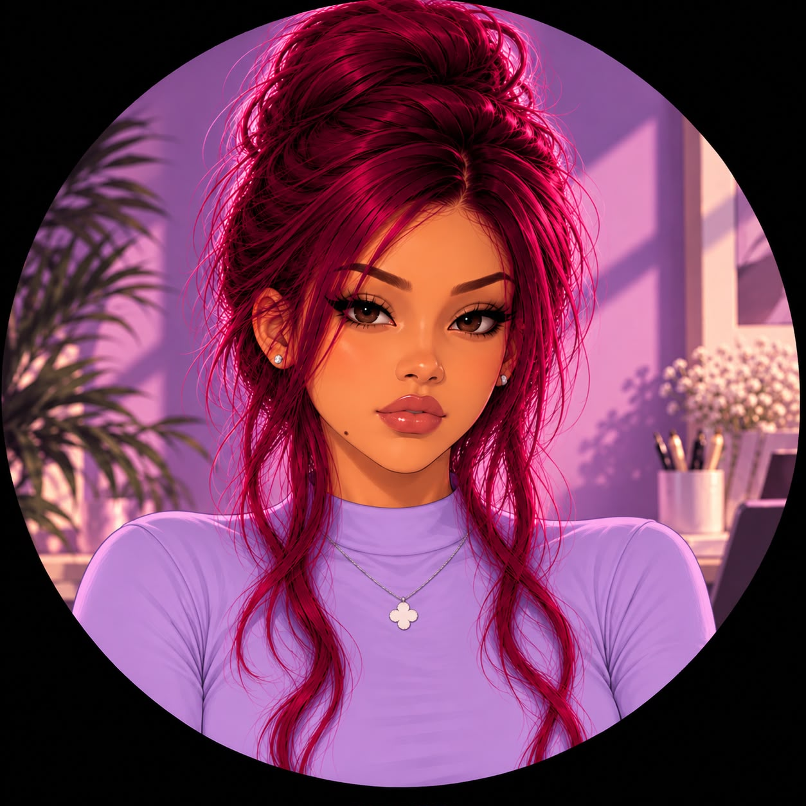
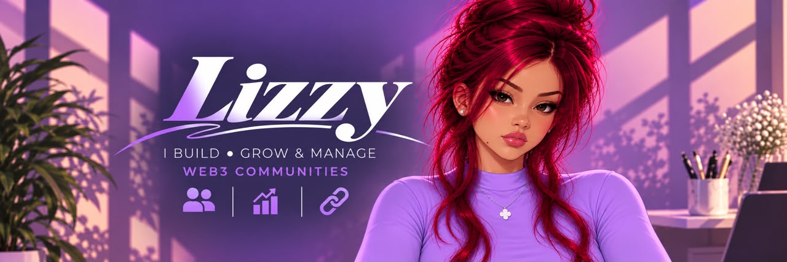

I'm Lizzy. I help Web3 projects turn a busy chat into a community people actually take part in.
Community Manager and Collab Manager across X, Telegram and Discord.

LizzyCommunity management, engagement, content, moderation, events and strategy for Web3 projects that want organized, engaging community experiences.
I'm Lizzy. I help Web3 projects turn a busy chat into a community people actually take part in.
Community Manager and Collab Manager across X, Telegram and Discord.
I run the conversations, games, events and content that give members a reason to show up.
And I keep a strong line open between the project and its members.
30+ projects across meme coin and NFT communities, each with its own culture and pace.
Every environment taught me to adjust my engagement style to the room.
300+ collaborations coordinated, so I'm as comfortable with partners as I am with members.
That mix sharpened my communication, coordination and relationship-building.
I manage the day-to-day community experience, keeping communication organized while staying actively involved with members.
I create conversations, activities, and interactive experiences that encourage members to participate and connect.
I develop practical community initiatives based on the project's goals, community culture, and stage.
I create community-focused posts, announcements, discussions, contests, and interactive content.
I plan and coordinate community events, games, contests, discussions, and other interactive experiences.
I help maintain an organized community environment by managing conversations, responding to members, and addressing issues when they arise.
I work across X, Telegram, Discord, and other community platforms to manage communication, activities, and engagement.
I learn the project, its goals, community environment, and members.
I pay attention to conversations, feedback, and what members respond to.
I turn those insights into relevant content, activities, and community experiences.
I actively participate in conversations and create opportunities for members to interact.
I focus on consistent community experiences that encourage participation and connection.
I've worked with 30+ Web3 projects. These are selected examples. Tap a card for the full breakdown.
Community Manager
Managed the community across Telegram and X, focusing on engagement, events, activities, communication, and the overall community experience.
Community Manager and Collab Manager
Worked across community management, moderation, engagement, and collaboration management while supporting communication between the project and other Web3 projects and communities.
Community Manager
Managed community engagement with a focus on interactive activities, games, and creating opportunities for members to participate.
Collab Manager
Alongside my Community Manager experience, I've coordinated 300+ collaborations across Web3 projects and communities.
Working across 300+ collaborations strengthened my outreach, communication, negotiation, and coordination skills while giving me a broad understanding of how different Web3 projects and communities operate.
Roles held and real community conversations. Tap to zoom.
Lizzy, you are doing great for our project.
Team LeadAs for the community management, I think you've been handling it well. I haven't had any particular issues with the way you've been managing things, so from my side, I'm happy with how it's being run.
Caopan Kingdom teamI'm satisfied with your services. You've done well in collab management and in moderation. TideWalkerz is pleased to have you with us.
TideWalkerz founderGood community management is more than keeping a chat active. It's about creating an environment where members can connect, participate, stay informed, and feel involved in what the project is building.
My experience in both community and collaboration management lets me engage communities while also communicating and coordinating effectively with teams, partners, and other Web3 projects and communities.
Time zone GMT+1. English (fluent), Japanese (basic).
"Need a community people actually want to stay in? Let's build it."
